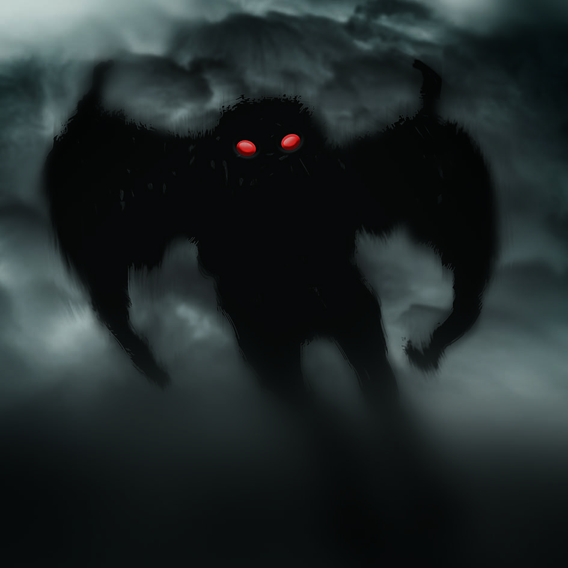
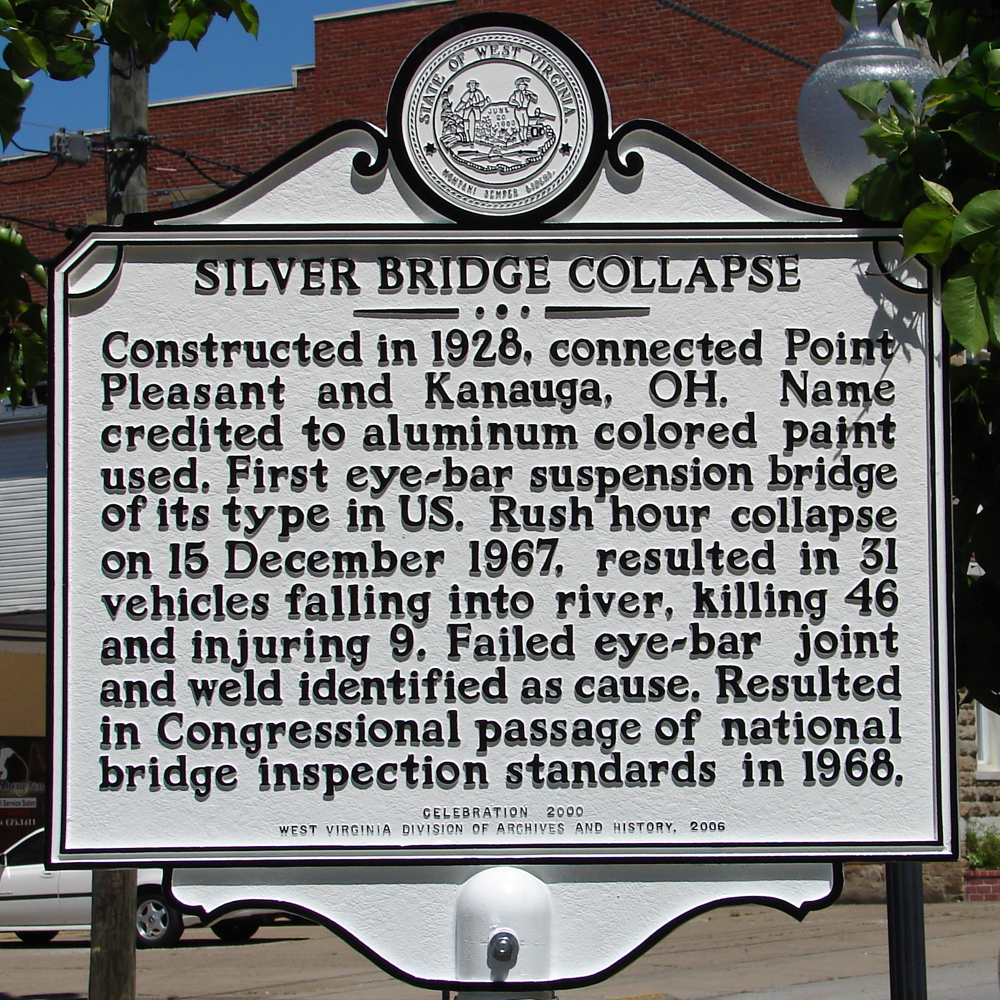
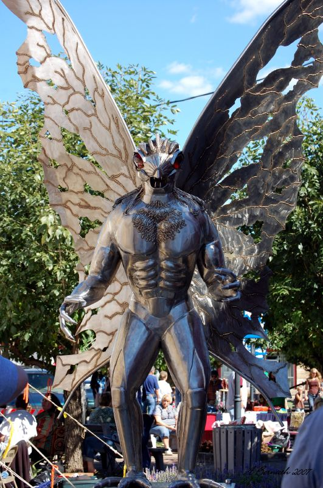

Mothman

"mothman" by mysteries illustrated is licensed under CC BY-NC-ND 2.0. To view a copy of this license, visit https://creativecommons.org/licenses/by-nd-nc/2.0/jp/?ref=openverse&atype=rich
The concept of the Mothman is one that harkens back to thousands of years of accounts of angels. A winged semi-humanoid with an almost prophetic ability to be spotted before disasters strike an area. Mothman separates itself from these angelic beings by appearing to be a humanoid-moth hybrid, or perhaps simply a large bipedal moth. Its body is often described as being pure black, about 7-10 feet tall, and has distinct brightly glowing red eyes.

"collapse of the 'mothman' bridge" by billy liar is licensed under CC BY 2.0. To view a copy of this license, visit https://creativecommons.org/licenses/by/2.0/?ref=openverse&atype=rich
Mothman is perhaps best known by the series of sightings that made it famous in the first place. Residents around the town of Point Pleasant, West Virginia had been reporting sightings of a large humanoid with bright red eyes appearing since 1966. Some saw the figure looming ominously on the hills overlooking the town, and some saw it flying along the highways and bridges. These all came to a head when the Silver Bridge collapsed on December 15th, 1967.

"Mothman Statue" by ldysw357 is licensed under CC BY-NC-SA 2.0. To view a copy of this license, visit https://creativecommons.org/licenses/by-nc-sa/2.0/?ref=openverse&atype=rich
People quickly began to draw connections between the sightings of Mothman and the disaster that killed 46 people. Some said that it was an evil omen, or even that the disaster was directly caused by the Mothman. Some saw its appearance as an attempt to warn the people of Point Pleasant about the impending doom. Whatever the reason, sightings of the Mothman declined after this event, and are fairly sparse today.
Mothman has become a cultural icon thanks to multiple mainstream adaptations of its story. A statue was made to honor the legacy of the Mothman in Point Pleasant, and on it is in an inscription that reads: "On a chilly, fall night in November 1966, two young couples drove into the TNT area north of Point Pleasant, West Virginia, when they realized they were not alone. What they saw that night has evolved into one of the great mysteies of all time; hence the Mothman Legacy began."